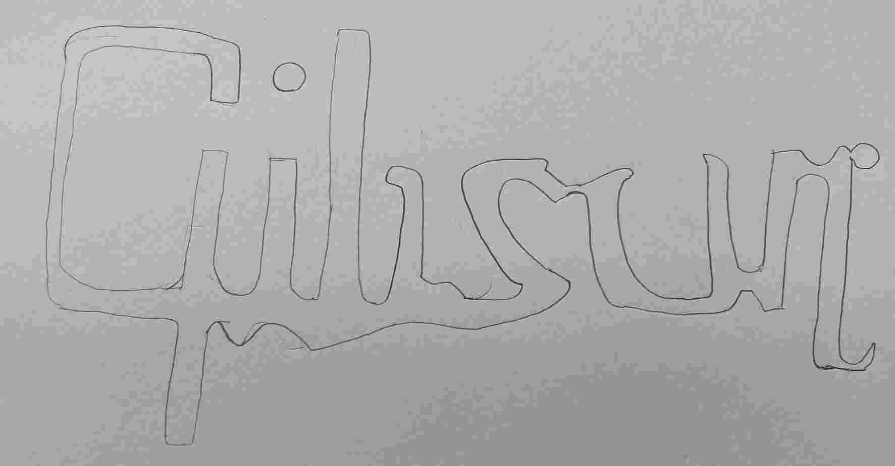
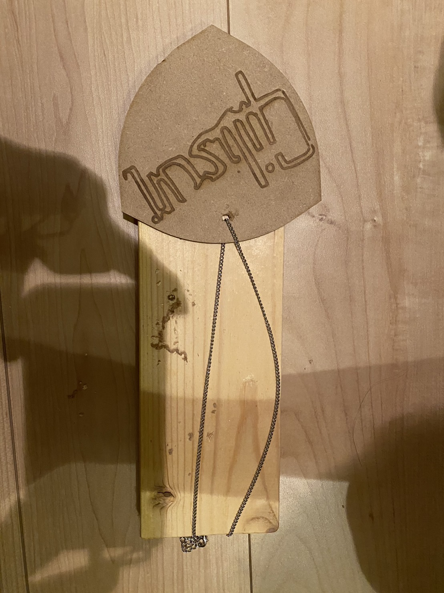
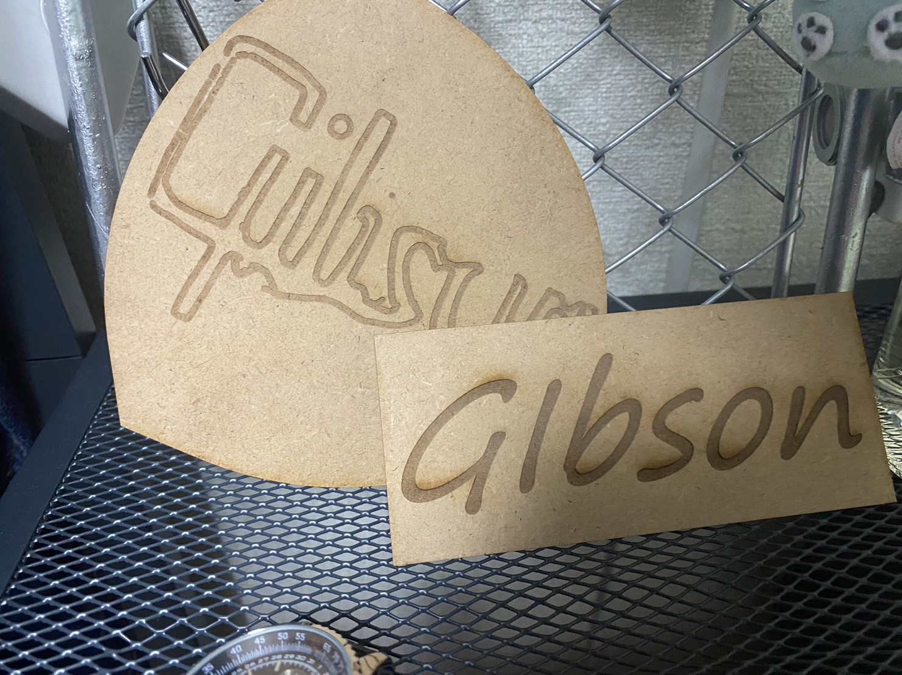

＜1.作品のタイトル＞
ギターピック型置物
今回は友達から教えてもらい自分で描いた絵から一点ものを作ろうと考えました。
＜２．手書きのスケッチ＞

＜３.作品＞

アクセサリ製作中
＜４.DXFファイル＞
ピック型アクセサリ
＜５．作品説明＞
ギターが好きで何かインテリアにもなって身に着けられるものを考えたときにピック型で作ってみようと考えたのがきっかけです。
最初は好きなギターのブランドのGibsonで看板のようなものを作ろうと考えましたが、パッとしないものができてしまいやめました。
これだけの画像がなかったので右のほうが初めに作った作品になります。
＜６．製作プロセスの中で調べたこと＞
写真からDXFファイル変換方法
友達から教えてもらった自分で書いた作品や頭で考えたことを具現化できるサイト
イラレの使い方
イラストレーターについて知り、作業効率を上げたかったため調べましたが、思い通りの検索結果がひっからずにまだまだ調べが足りませんでした。
ryuugoのサイト